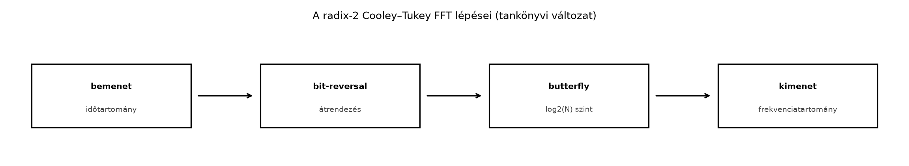

A gyors Fourier-transzformáció (FFT) a digitális jelfeldolgozás egyik legalapvetőbb építőköve: a diszkrét Fourier-transzformáció (DFT) időben végrehajtható változata, amely a spektrumanalízistől a képfeldolgozáson át a gyors konvolúcióig számtalan feladatban jelen van. A GPU architektúrája különösen alkalmas FFT végrehajtására, mert a transzformáció nagyszámú, egymástól független pillangó-műveletet tartalmaz, és a memóriahierarchia jól kihasználható a fázisfaktorok és résztömbök gyorsítótárazására. Az NVIDIA hivatalos könyvtára, a cuFFT, ezt a feladatot magas szintű, optimalizált API-val teszi elérhetővé. Ez az alfejezet a cuFFT alapjait, a batched végrehajtást, a pontossági és memória-szempontokat, valamint egy ellenőrizhető FFT/inverz FFT labort mutatja be.

A cuFFT a terv–végrehajtás (plan–exec) modellt
követi: először létrehozunk egy transzformációs tervet
(cufftHandle), amely a kiválasztott mérethez, típushoz és
batch-hez optimalizált végrehajtási stratégiát tartalmazza, majd ezt a
tervet többször is felhasználhatjuk különböző adatokra. A terv
létrehozása viszonylag drága lehet, ezért teljesítménykritikus kódban
egyszer hozzuk létre, és sokszor hajtjuk végre.
A cuFFT két fő komplex típust definiál:
cufftComplex: egyszeres pontosságú komplex szám, két
float taggal (x, y).cufftDoubleComplex: kétszeres pontosságú komplex szám,
két double taggal.A transzformáció iránya a CUFFT_FORWARD és
CUFFT_INVERSE konstansokkal adható meg. A cuFFT nem
normalizálja az inverz transzformációt: a forward-inverz páros
után az eredmény
-szerese
az eredeti jelnek (ahol
a transzformáció hossza). A normalizálást a felhasználónak kell
elvégeznie, általában
tényezővel való szorzással.
A transzformáció típusok az adat típusa és a valós/komplex jelleg alapján:
CUFFT_C2C: komplex → komplexCUFFT_R2C: valós → komplex (a kimenet csak az első
frekvenciát tartalmazza a Hermite-(konjugált) szimmetria miatt:
)CUFFT_C2R: komplex → valós (a bemenetnek ugyanazt a
tömörített formát kell követnie)CUFFT_Z2Z, CUFFT_D2Z,
CUFFT_Z2D: kétszeres pontosságú változatokA leggyakrabban használt tervező függvények:
cufftPlan1d(&plan, N, type, batch) – 1D
transzformáció, adott batch mérettel.cufftPlanMany(&plan, rank, n, inembed, istride, idist, onembed, ostride, odist, type, batch)
– általános, többdimenziós és testreszabott memóriaelrendezésű
transzformációkhoz.A végrehajtás a
cufftExecC2C(plan, idata, odata, direction)
(komplex–komplex) vagy a megfelelő R2C/C2R változatokkal történik. A
függvények eszközoldali mutatókat várnak, és az aktuális streamhez
igazodnak (alapértelmezés szerint a default streamhez, de
cufftSetStream segítségével más streamhez rendelhető).
A terv felszabadítása cufftDestroy(plan) hívással
kötelező, különben eszközoldali erőforrások szivárognak.
A következő CUDA C++ példa egy 1024 hosszúságú komplex jelet transzformál, majd az inverz FFT-vel rekonstruálja. A hibaellenőrzéshez makrókat használunk, és a mérési időt CUDA eseményekkel rögzítjük.
// CUDA C++ (C++17, cuFFT)
#include <cufft.h>
#include <cuda_runtime.h>
#include <vector>
#include <complex>
#include <cmath>
#include <iostream>
#include <iomanip>
#include <cstdlib>
#include <algorithm>
// a könyv kanonikus hibamakrói (1.2)
#define CUDA_CHECK(call) \
do { \
cudaError_t err = (call); \
if (err != cudaSuccess) { \
std::cerr << "CUDA error at " << __FILE__ << ":" << __LINE__ \
<< " " << cudaGetErrorString(err) << std::endl; \
std::exit(EXIT_FAILURE); \
} \
} while (0)
#define CUFFT_CHECK(call) \
do { \
cufftResult res = (call); \
if (res != CUFFT_SUCCESS) { \
std::cerr << "cuFFT error at " << __FILE__ << ":" << __LINE__ \
<< " code " << res << std::endl; \
std::exit(EXIT_FAILURE); \
} \
} while (0)
int main() {
const int N = 1024;
const int batch = 1;
const float pi = 3.14159265358979323846f;
// Host oldali bemeneti jel: cos(2π*4t) + sin(2π*8t), valós részben
std::vector<std::complex<float>> h_signal(N);
for (int i = 0; i < N; ++i) {
float t = static_cast<float>(i) / N;
float val = std::cos(2.0f * pi * 4.0f * t) +
std::sin(2.0f * pi * 8.0f * t);
h_signal[i] = std::complex<float>(val, 0.0f);
}
// Eszközoldali pufferek allokálása
cufftComplex* d_signal;
cufftComplex* d_spectrum;
cufftComplex* d_reconstructed;
CUDA_CHECK(cudaMalloc(&d_signal, N * sizeof(cufftComplex)));
CUDA_CHECK(cudaMalloc(&d_spectrum, N * sizeof(cufftComplex)));
CUDA_CHECK(cudaMalloc(&d_reconstructed, N * sizeof(cufftComplex)));
// Bemenet feltöltése az eszközön
CUDA_CHECK(cudaMemcpy(d_signal, h_signal.data(),
N * sizeof(cufftComplex), cudaMemcpyHostToDevice));
// cuFFT terv létrehozása
cufftHandle plan;
CUFFT_CHECK(cufftPlan1d(&plan, N, CUFFT_C2C, batch));
// Warm-up a mérés előtt
for (int i = 0; i < 5; ++i) {
CUFFT_CHECK(cufftExecC2C(plan, d_signal, d_spectrum, CUFFT_FORWARD));
}
CUDA_CHECK(cudaDeviceSynchronize());
// Időmérés CUDA eseményekkel
cudaEvent_t start, stop;
CUDA_CHECK(cudaEventCreate(&start));
CUDA_CHECK(cudaEventCreate(&stop));
const int iterations = 20;
// Hívásonkénti események: így a medián és a szórás is számolható
std::vector<float> times_ms(iterations);
for (int i = 0; i < iterations; ++i) {
CUDA_CHECK(cudaEventRecord(start));
CUFFT_CHECK(cufftExecC2C(plan, d_signal, d_spectrum, CUFFT_FORWARD));
CUDA_CHECK(cudaEventRecord(stop));
CUDA_CHECK(cudaEventSynchronize(stop));
CUDA_CHECK(cudaEventElapsedTime(×_ms[i], start, stop));
}
std::vector<float> sorted_ms(times_ms);
std::sort(sorted_ms.begin(), sorted_ms.end());
double median_ms = 0.5 * (sorted_ms[iterations / 2 - 1] + sorted_ms[iterations / 2]);
double mean_ms = 0.0, ss = 0.0; // mintaszórás két menetben
for (float t : times_ms) mean_ms += t;
mean_ms /= iterations;
for (float t : times_ms) ss += (t - mean_ms) * (t - mean_ms);
double sd_ms = std::sqrt(ss / (iterations - 1));
std::cout << "Forward FFT idő: medián " << std::fixed << std::setprecision(6)
<< median_ms << " ms, szórás " << sd_ms << " ms (" << iterations
<< " ismétlés)\n";
// Spektrum visszamásolása és csúcsok ellenőrzése
std::vector<std::complex<float>> h_spectrum(N);
CUDA_CHECK(cudaMemcpy(h_spectrum.data(), d_spectrum,
N * sizeof(cufftComplex), cudaMemcpyDeviceToHost));
// A két legnagyobb csúcs a pozitív frekvenciákon (0..N/2)
float max1 = 0.0f, max2 = 0.0f;
int idx1 = -1, idx2 = -1;
for (int k = 0; k <= N / 2; ++k) {
float mag = std::abs(h_spectrum[k]);
if (mag > max1) {
max2 = max1; idx2 = idx1;
max1 = mag; idx1 = k;
} else if (mag > max2) {
max2 = mag; idx2 = k;
}
}
std::cout << "Spektrum csúcsok: (" << idx1 << ", " << max1
<< ") és (" << idx2 << ", " << max2 << ")\n";
// Inverz FFT
CUFFT_CHECK(cufftExecC2C(plan, d_spectrum, d_reconstructed, CUFFT_INVERSE));
std::vector<std::complex<float>> h_reconstructed(N);
CUDA_CHECK(cudaMemcpy(h_reconstructed.data(), d_reconstructed,
N * sizeof(cufftComplex), cudaMemcpyDeviceToHost));
// Normalizálás és hibaszámítás
float max_abs_error = 0.0f;
for (int i = 0; i < N; ++i) {
// std::complex-nek nincs .x/.y mezője: osztás skalárral (az inverz nincs normalizálva)
std::complex<float> recon = h_reconstructed[i] / static_cast<float>(N);
float err = std::abs(h_signal[i] - recon);
max_abs_error = std::max(max_abs_error, err);
}
std::cout << "Maximális abszolút hiba inverz FFT után: "
<< std::scientific << max_abs_error << "\n";
// Takarítás
CUDA_CHECK(cudaFree(d_reconstructed));
CUDA_CHECK(cudaFree(d_spectrum));
CUDA_CHECK(cudaFree(d_signal));
CUFFT_CHECK(cufftDestroy(plan));
CUDA_CHECK(cudaEventDestroy(start));
CUDA_CHECK(cudaEventDestroy(stop));
return 0;
}A kód legfontosabb tanulságai:
std::complex<float> és az eszköz oldali
cufftComplex közötti másolás közvetlenül működik, mert a
cufftComplex elrendezése megegyezik a két
float mezővel rendelkező struktúrával.batch (pl. 1000) vagy
N ajánlott.Sok gyakorlati alkalmazásban nem egyetlen, hanem sok azonos hosszúságú transzformációt kell egyszerre végrehajtani. Ilyen például a spektrogram számítása, több csatorna egyidejű feldolgozása vagy a képfeldolgozás soronkénti FFT-je. A cuFFT ezt batch paraméterrel támogatja: a terv létrehozásakor megadott batch érték azt jelzi, hogy hány azonos szerkezetű transzformációt hajtunk végre.
Az egyszerű cufftPlan1d is elfogad batch paramétert, de
ilyenkor a bemeneti adatokat folytonosan,
elemű blokkokban kell elhelyezni. Ha a memóriában nem folytonos az
elrendezés (például egy nagyobb mátrix soraiban), akkor a
cufftPlanMany függvényt kell használni:
cufftHandle plan_many;
int n[] = {256}; // 1D FFT méret
int inembed[] = {512}; // bemeneti sor hossza (a tényleges adatsor szélesebb lehet)
int istride = 1; // két szomszédos elem távolsága
int idist = 512; // két batch elem közötti távolság (sorhossz)
int onembed[] = {256};
int ostride = 1;
int odist = 256;
int batch_size = 100;
cufftPlanMany(&plan_many, 1, n,
inembed, istride, idist,
onembed, ostride, odist,
CUFFT_C2C, batch_size);A fenti konfiguráció 100 darab 256 hosszú FFT-t hajt végre, ahol a
bemeneti adatok egy
elemből álló mátrixban helyezkednek el, és minden sor első 256 elemét
transzformáljuk. A stride-ok és a dist paraméterek pontos beállítása
kritikus: ha idist nem egyenlő a tényleges sorok közötti
távolsággal, a cuFFT hibás memóriacímeket olvas.
Az alábbi ábra két dolgot mutat kicsiben: felül a radix-2
pillangóháló szintjeit (egy szinten belül minden pillangó független,
ezért párhuzamosítható), alul ugyanennek a
cufftPlanMany-elrendezésnek egy 4 batch-es, 8 hosszú
változatát a helyes és egy hibás idist értékkel.
cufftPlanMany elrendezése (n = 8, idist =
16)A batch méret megválasztásánál három szempontot kell figyelembe venni:
A többdimenziós FFT-k közül a 2D és 3D transzformációk a
cufftPlan2d és cufftPlan3d függvényekkel
hozhatók létre. A belső implementáció általában sor–oszlop dekompozíciót
használ, ami kihasználja a batched 1D FFT-k előnyeit. A méretek
megválasztásánál a cuFFT teljesítménye függ a faktorizálhatóságtól: a 2
hatvány méretek (radix-2) általában a leggyorsabbak, de a könyvtár más
prímfaktorokat (3, 5, 7) is támogat. Nagy prímtényezőt tartalmazó méret
esetén (ha a méretnek a cuFFT-dokumentáció szerinti kb. 127-et meghaladó
prímtényezője van; a pontos küszöb ellenőrizendő) a cuFFT a
Bluestein-algoritmusra vált, ami lassabb, de automatikusan, a
felhasználó beavatkozása nélkül történik. Nullákkal való
kiegészítés nem általános megoldás: a kiegészített jel DFT-je
más frekvenciarácson
()
adja a spektrumot, ezért nem az eredeti
-pontos
DFT, és spektrális szivárgást okozhat; ez csak lineáris konvolúciónál
vagy spektrális interpolációnál megengedett, ahol a feladat
természeténél fogva elfogadható. Egyébként a lassabb Bluestein-utat kell
elfogadni, vagy a jelhosszt kell a feladat szempontjából megengedett
módon (pl. ablakozás, újramintavételezés) igazítani.
A cuFFT két pontossági szintet kínál: FP32
(cufftComplex) és FP64
(cufftDoubleComplex). Az FFT numerikus hibája két fő
forrásból származik:
Az FP32 esetén a relatív hiba tipikusan – nagyságrendű, míg FP64 esetén –. Ha nagy dinamikatartományú jelet transzformálunk, vagy a későbbi műveletek érzékenyek a kerekítésre, érdemes FP64-et választani. Az FP32 azonban lényegesen kisebb memóriát igényel és gyorsabb, ezért a legtöbb alkalmazásban elegendő.
A pontosság és a memória közötti kapcsolat:
A cuFFT a végrehajtás során belső munkaterületet is
használhat. A cufftPlan1d és cufftPlanMany ezt
automatikusan lefoglalja. A haladó felhasználók a
cufftSetWorkArea függvénnyel explicit módon is
biztosíthatnak munkaterületet (pl. több terv ugyanazon
puffer-használatára), de ehhez az automatikus allokációt ki kell
kapcsolni, és a tervet a cufftCreate /
cufftMakePlan1d (vagy cufftMakePlanMany)
párossal kell létrehozni; az egyszerű
cufftPlan1d/cufftPlanMany API-val a
cufftSetWorkArea nem használható. A sorrend (nem futtatott
vázlat, a szignatúrák a cuFFT-dokumentációban ellenőrizendők):
cufftHandle plan;
size_t work_size = 0;
CUFFT_CHECK(cufftCreate(&plan));
CUFFT_CHECK(cufftSetAutoAllocation(plan, 0)); // az automatikus allokáció kikapcsolása
CUFFT_CHECK(cufftMakePlan1d(plan, N, CUFFT_C2C, batch, &work_size));
void* d_work = nullptr;
CUDA_CHECK(cudaMalloc(&d_work, work_size));
CUFFT_CHECK(cufftSetWorkArea(plan, d_work)); // saját munkaterület megadásaA memória és a pontosság együttes ellenőrzésére a laborban a forward-inverz roundtrip hibát mérjük: ha a bemeneti jel , az inverz FFT kimenete , akkor a normalizálás után . A maximális abszolút hiba FP32 esetén jellemzően – nagyságrendű (ellenőrző küszöbnek -t használunk), FP64 esetén alatt várható; ezeket a laborban mérni kell.
A labor célja, hogy a fenti kódot lefordítva és futtatva ellenőrizzük a cuFFT működését, rögzítsük a mérési körülményeket, és a várt eredményeket összevessük a mért értékekkel. A mérési napló az alábbi sablon szerint készül.
Labor környezet (példa, ellenőrizendő):
nvidia-smi
kimenete alapján ellenőrizendő)cufftGetVersion() hívással olvasható ki (kitöltendő)Build parancs:
nvcc -O3 -std=c++17 -arch=sm_86 -o fft_cufft fft_cufft.cu -lcufftFuttatási parancs:
./fft_cufftMérési napló (sablon – a cellákat a valós futtatás után kell kitölteni, számot nem közlünk):
| Mért jellemző | Várt érték | Mért érték | Megjegyzés |
|---|---|---|---|
| Input hossz | 1024 | <mért – kitöltendő> | – |
| Batch | 1 | <mért – kitöltendő> | – |
| Típus | CUFFT_C2C, FP32 | <mért – kitöltendő> | – |
| Forward FFT medián idő | nincs rögzített, csak referencia | <mért – kitöltendő> | 20 ismétlés, 5 warm-up után |
| Szórás | – | <mért – kitöltendő> | hívásonkénti CUDA eseményekkel (a kód kiírja) |
| Spektrum csúcs indexek | 4 és 8 (valamint a tükrözött , ) | <mért – kitöltendő> | A tartományban a két legnagyobb csúcs |
| Csúcs amplitúdók | (mindkét csúcs; elméleti érték) | <mért – kitöltendő> | az eltérés a kerekítésből adódik |
| Inverz FFT utáni max abszolút hiba | < (FP32, ellenőrző küszöb) | <mért – kitöltendő> | normalizálás () után |
Az alábbi ábra a laborjel várt képét mutatja, amelyhez a saját kimenet (csúcsindexek, amplitúdók, a normalizálás nélküli rekonstrukció) hasonlítható.
A táblázat „Mért érték” oszlopa üres sablon: a tényleges időket, csúcsokat és hibákat a futtatás után kell rögzíteni, előre ide számot nem írunk. A mérés előtt 5 warm-up futtatás, majd 20 mérési iteráció javasolt; a mediánt és a szórást a kód kiírja. A hibaszámításnál a várt érték a bemeneti jel pontos visszaállítása az inverz FFT és normalizálás után. A hibakorlát indoklása: , a jel amplitúdója legfeljebb 2, az FP32 egységnyi kerekítése , a kerekítési hiba tipikusan néhány – nagyságrendű, a küszöb ezt bőven fedi (a nagyságrendet a futtatás igazolja).
A várt és mért eredmények szétválasztása:
Az inverz FFT normalizálásának elhagyása
A cuFFT nem osztja le az inverz transzformáció eredményét
-nel.
Ha ezt elfelejtjük, a rekonstruált jel
-szeres
amplitúdójú lesz, ami a legtöbb alkalmazásban hibás. A megoldás: a
CUFFT_INVERSE után minden elemet osztani kell a
transzformáció hosszával, vagy a felhasználási helyen figyelembe venni a
skálázást.
Helytelen batch/stride beállítás a
cufftPlanMany esetén
Ha a bemeneti adatok nem folytonosak, és az
idist/odist értékeket rosszul adjuk meg, a
cuFFT hibás memóriacímekről olvas, ami nem definiált viselkedést vagy
rossz eredményt okoz. Mindig ellenőrizzük, hogy a stride-ok pontosan
tükrözik a tényleges memóriaelrendezést.
Típusmismatch
A cufftExecC2C komplex bemenetet vár. Ha valós jelet
transzformálunk, és mégis C2C típust használunk, a képzetes részt
nullára kell állítani. Nagyobb hatékonyság érdekében valós jeleknél
érdemes CUFFT_R2C-t használni, amely kihasználja a
szimmetriát, és majdnem felezi a memóriát és a számítási
költséget.
A plan felszabadításának elmulasztása
A cufftDestroy elhagyása memóriaszivárgáshoz vezet,
különösen sok plan létrehozása és eldobása esetén. A plan-eket a hatókör
végén mindig meg kell semmisíteni.
Aszinkron végrehajtás figyelmen kívül hagyása a
mérésnél
A cuFFT végrehajtás aszinkron a hosthoz képest. Ha az időméréshez nem
használunk CUDA eseményeket vagy nem hívunk
cudaDeviceSynchronize-t, a mért idő a host-oldali kiadás
idejét tükrözi, nem a tényleges GPU végrehajtást.
Nagy prímtényezős méretek
teljesítményhatása
A cuFFT tetszőleges méretet kezel, a nagy prímtényezőjű méretek (pl. a
prím 1021) Bluestein-algoritmust igényelnek, ami lassabb, mint a
2-hatvány méretek – ez nem hiba, hanem automatikus kezelés. A jel
nullákkal való kiegészítése más transzformációt ad (más
frekvenciarács, szivárgás), ezért csak konvolúciónál/interpolációnál
használható; kis példán (pl. 1021 és 1024 pontos spektrum összevetése)
ez megfigyelhető. Egyébként a feladat természetéből adódó hosszt kell
megtartani, vagy a lassulást elfogadni.
Miért kell a cuFFT inverz FFT kimenetét kézzel normalizálni, és mi történik, ha ezt elfelejtjük? Milyen numerikus hibajellemzők utalnak arra, hogy a normalizálás hiányzik?
Vázlatos válasz: A cuFFT mind a forward, mind az inverz transzformációt ugyanazzal a definícióval számítja, és az inverznél nem alkalmaz skálázást. Ezért a forward–inverz páros után az eredmény -szerese az eredeti jelnek. A normalizálás elhagyása tipikusan -szeres amplitúdót és a vártnál sokkal nagyobb abszolút hibát eredményez. Az ilyen hiba felismerhető abból, hogy a rekonstruált és az eredeti jel elemenkénti hányadosa (nem-nulla elemeknél) állandó és pontosan (itt 1024), a jel alakja pedig változatlan: a relatív hiba -nel osztás után a szokásos nagyságrendű marad. A javítás az inverz FFT kimenetének -nel való szorzása.
A cuFFT a GPU-alapú Fourier-transzformáció hatékony, magas szintű eszköze. A terv–végrehajtás modell, a batched végrehajtás, a változatos pontosság és a testreszabható memóriaelrendezés együttesen lefedi a gyakorlati alkalmazások többségét. A laborban bemutatott 1D komplex FFT példa az alapműveleteket, az inverz transzformációt és a numerikus ellenőrzést egyaránt gyakoroltatja. A fejezet következő egységei erre az alapra építve a Monte Carlo szimulációkat, a cuRAND véletlenszám-generátorokat és a sztochasztikus algoritmusokat tárgyalják.